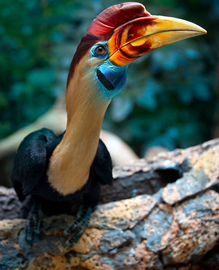

Aceros Cassidix
(Rangkok Sulawesi)
Aceros Cassidix, atau Rangkok Sulawesi (Hornbill), adalah burung besar endemik Sulawesi dengan paruh khas berbentuk tanduk. Burung ini terancam karena deforestasi dan perburuan. Ekologisnya sangat penting, sebab rangkok menjadi agen penyebar biji pohon hutan yang berbuah besar, sehingga menjaga kelestarian hutan tropis. Tanpa peran burung ini, regenerasi beberapa jenis pohon akan terhambat.
Panjang tubuh dapat mencapai 100 cm pada jantan, dan 88 cm pada betina. Julang Sulawesi memiliki tanduk (casque) yang besar di atas paruh, berwarna merah pada jantan dan kuning pada betina. Paruh berwarna kuning dan memiliki kantung biru pada tenggorokan.